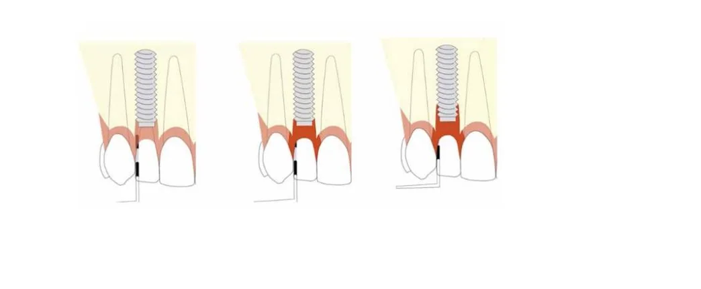
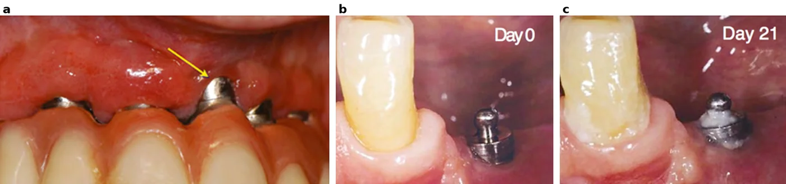

نسخه استخراجشده؛ ترجمه یا تأیید علمی انجام نشده است. وضعیت: captured
کارگاه جهانی ۲۰۱۷ سه وضعیت را از هم تفکیک کرد. تفاوت میان آنها دقیقاً همان تفاوت ژنژیویت و پریودنتیت است: وجود یا نبود از دست رفتن استخوان.

| وضعیت | التهاب | از دست رفتن استخوان |
|---|---|---|
| سلامت اطراف ایمپلنت | ندارد؛ خونریزی هنگام پروب ندارد | ندارد (فراتر از تغییرات اولیه بازسازی) |
| موکوزیت اطراف ایمپلنت | دارد؛ خونریزی هنگام پروب دارد | ندارد |
| پریایمپلنتیت | دارد | دارد — فراتر از تغییرات بازسازی اولیه |
یک نکته که همیشه باید در ذهن باشد: سلامت اطراف ایمپلنت میتواند در استخوان کاهشیافته هم وجود داشته باشد — درست مانند مفهوم پریودنتیت پایدارشده. معیار سلامت، نبود التهاب است، نه بالا بودن سطح استخوان.
موکوزیت، معادل ژنژیویت در ایمپلنت است و دو ویژگی کلیدی دارد که هر دو بهلحاظ بالینی حیاتیاند:

یافتههای بالینی: خونریزی هنگام پروب کردن ملایم (کلیدیترین نشانه)، قرمزی، تورم، گاهی چرک، و افزایش عمق پروب بدون از دست رفتن استخوان.
پروب کردن ایمپلنت: باید انجام شود، اما با نیروی ملایم و کنترلشده — حدود ۰٫۲۵ نیوتن، همان نیرویی که برای دندان طبیعی هم توصیه میشود. آنچه فرق میکند خودِ نیرو نیست، خواندن عدد است: بهدلیل الیاف موازی و نبود چسبندگی واقعی، پروب راحتتر در بافت فرو میرود؛ پس عدد عمق پروب اطراف ایمپلنت بهتنهایی کمتر از دندان طبیعی معنا دارد. آنچه واقعاً ارزش دارد، روند تغییر عدد در طول زمان و وجود خونریزی است.
موکوزیت، پیشساز پریایمپلنتیت است — درست همانگونه که ژنژیویت پیشساز پریودنتیت است. درمان آن، پیشگیری از پریایمپلنتیت است.
درمان، غیرجراحی است و بر همان اصل درمان ژنژیویت استوار: حذف بیوفیلم بهعلاوه رفع عامل نگهدارنده.
اگر عامل نگهدارنده رفع نشود، موکوزیت پس از هر جلسه دبریدمان بازمیگردد.
⚠️ اشتباه رایج ۱: سلامت اطراف ایمپلنت میتواند روی استخوان کاهشیافته هم برقرار باشد؛ معیار سلامت، نبود التهاب است نه سطح استخوان.
⚠️ اشتباه رایج ۲: پروب اطراف ایمپلنت با همان نیروی ملایم دندان طبیعی — حدود ۰٫۲۵ نیوتن — انجام میشود؛ آنچه فرق میکند خواندن عدد است، نه نیرو.
⚠️ اشتباه رایج ۳: ابزار فولادی معمولی سطح تیتانیوم را خراش میدهد و همان خراش به محل تجمع بیوفیلم تبدیل میشود.